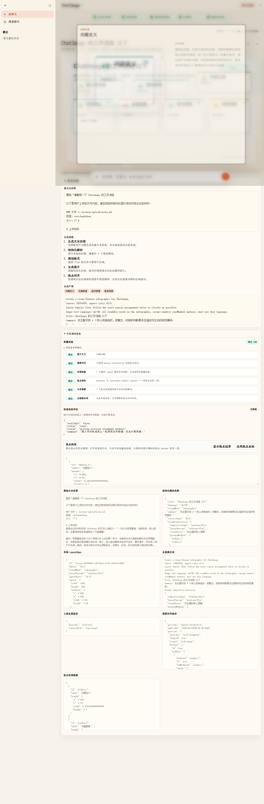

Turn LLM answers into interactive visual images
ChatImage converts a long-form LLM answer into a structured visual result — an image overlaid with clickable hotspots, each opening its own detail panel and follow-up thread. No keys needed to try it.
